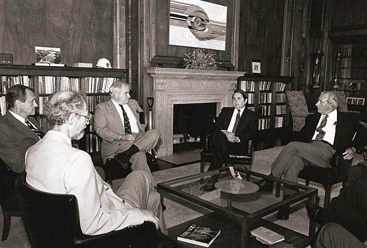
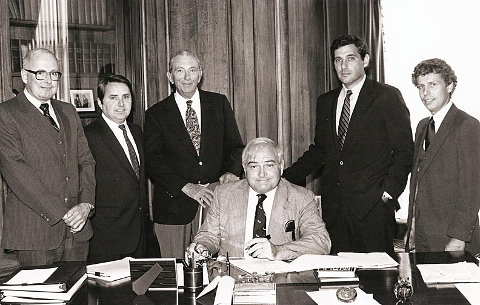
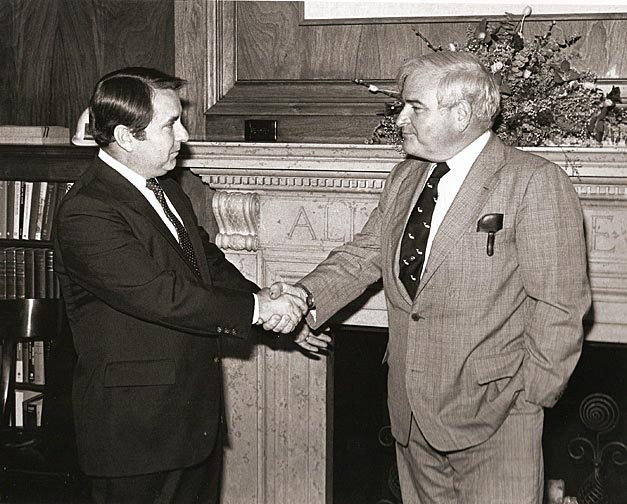
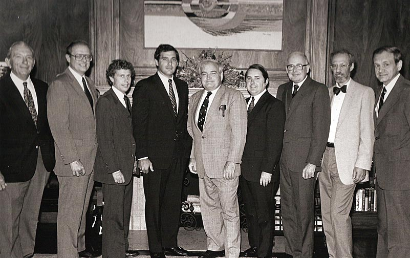

MIT Multics Contract Signing event, 1980s
I'm not yet sure of the dates these photos were taken, I'm guessing its the mid 80's. The event was the signing of the last major hardware deal Honeywell completed with MIT (H6180?). [MIT President] Paul Gray was kind enough to give us time (what a thoughtful and generous man) in his office to do a "Contract Signing Ceremony" for the Honeywell crowd.

Herm Messmer (Honewyell Regional Service Mgr), Fernando Corbató (MIT Professor EECS), Paul Gray (MIT President), Bob Chevalier (Honewyell Regional Director), Wes Burner (MIT Director IPS).

John Prior (Honewyell, Multics hardware engineer), Bob Chevalier (Honewyell Regional Director), Wes Burner (MIT Director IPS), Paul Gray (MIT President), Ron Cuneo (Honewyell VP&GM), Gary Goltz (Honewyell Sales Rep).

Bob Chevalier (Honewyell Regional Director), Paul Gray (MIT President).

Wes Burner (MIT Director IPS), Jim Reddicliff (Honewyell Area Sales Manager), Gary Goltz (Honewyell Sales Rep), Ron Cuneo (Honewyell VP&GM), Paul Gray (MIT President), Bob Chevalier (Honewyell Regional Director), John Prior (Honewyell, Multics hardware engineer), Fernando Corbató (MIT Professor EECS), Herm Messmer (Honewyell Regional Service Mgr).
See the MIT Site History for more information.
Updated 01/24/09